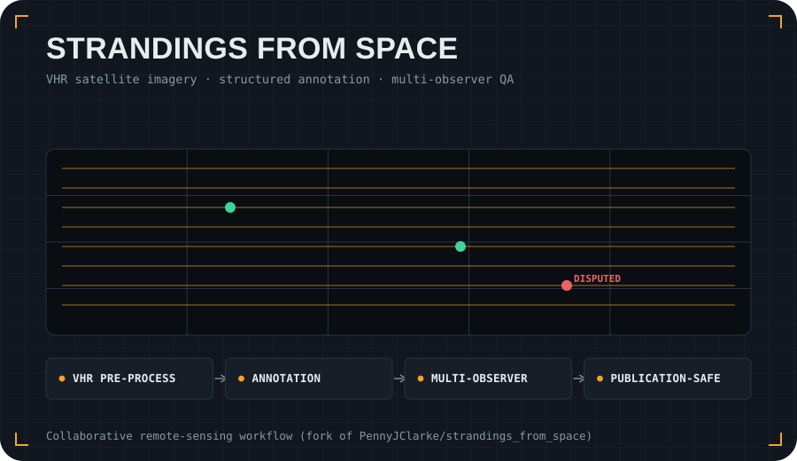

Problem
Cetacean stranding monitoring is difficult in remote, complex or under-resourced coastlines. Very-high-resolution satellite imagery can help extend monitoring, but the workflow needs to be accessible, standardised and reproducible for different users and study regions.
Approach
- Pre-process VHR optical and SAR satellite imagery using open-source Python and QGIS workflows.
- Support structured image annotation with standardised attributes for stranded cetacean observations.
- Compare annotations from multiple observers using semi-automated clustering and count-congruence summaries.
- Keep the public repository useful while respecting satellite-imagery licensing and data-sharing boundaries.
What it demonstrates
This project adds the environmental-monitoring side of my portfolio. It shows collaborative research software, remote-sensing workflows, reproducible notebooks and practical tooling for ecological and conservation applications.
The canonical multi-author repository is maintained with the wider research team; my public fork is included here to show the connection to my portfolio and related code contributions.
git clone https://github.com/PennyJClarke/strandings_from_space.git
cd strandings_from_space
# see README.md for notebook workflows and environment files
cd strandings_from_space
# see README.md for notebook workflows and environment files